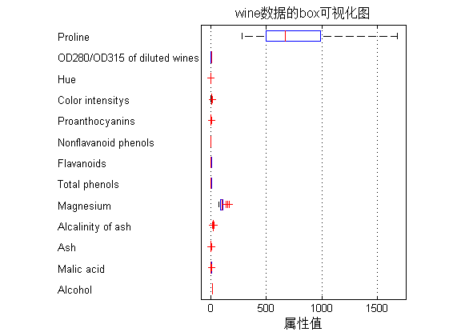

SVM神经网络中的参数优化---如何更好的提升分类器的性能
| 该案例作者申明： |
| 1：本人长期驻扎在此板块里，对该案例提问，做到有问必答。 |
| 2：此案例有配套的教学视频，配套的完整可运行Matlab程序。 |
| 3：以下内容为该案例的部分内容（约占该案例完整内容的1/10）。 |
| 4：此案例为原创案例，转载请注明出处（Matlab中文论坛，《Matlab神经网络30个案例分析》）。 |
| 5：若此案例碰巧与您的研究有关联，我们欢迎您提意见，要求等，我们考虑后可以加在案例里。 |
| 6：您看到的以下内容为初稿，书籍的实际内容可能有少许出入，以书籍实际发行内容为准。 |
| 7：此书其他常见问题、预定方式等，请点击这里。 |
Contents
清空环境变量
function chapter13_PSO
close all; clear; clc; format compact;
数据提取
% 载入测试数据wine,其中包含的数据为classnumber = 3,wine:178*13的矩阵,wine_labes:178*1的列向量 load chapter13_wine.mat; % 画出测试数据的box可视化图 figure; boxplot(wine,'orientation','horizontal','labels',categories); title('wine数据的box可视化图','FontSize',12); xlabel('属性值','FontSize',12); grid on; % 画出测试数据的分维可视化图 figure subplot(3,5,1); hold on for run = 1:178 plot(run,wine_labels(run),'*'); end xlabel('样本','FontSize',10); ylabel('类别标签','FontSize',10); title('class','FontSize',10); for run = 2:14 subplot(3,5,run); hold on; str = ['attrib ',num2str(run-1)]; for i = 1:178 plot(i,wine(i,run-1),'*'); end xlabel('样本','FontSize',10); ylabel('属性值','FontSize',10); title(str,'FontSize',10); end % 选定训练集和测试集 % 将第一类的1-30,第二类的60-95,第三类的131-153做为训练集 train_wine = [wine(1:30,:);wine(60:95,:);wine(131:153,:)]; % 相应的训练集的标签也要分离出来 train_wine_labels = [wine_labels(1:30);wine_labels(60:95);wine_labels(131:153)]; % 将第一类的31-59,第二类的96-130,第三类的154-178做为测试集 test_wine = [wine(31:59,:);wine(96:130,:);wine(154:178,:)]; % 相应的测试集的标签也要分离出来 test_wine_labels = [wine_labels(31:59);wine_labels(96:130);wine_labels(154:178)];

数据预处理
数据预处理,将训练集和测试集归一化到[0,1]区间
[mtrain,ntrain] = size(train_wine);
[mtest,ntest] = size(test_wine);
dataset = [train_wine;test_wine];
% mapminmax为MATLAB自带的归一化函数
[dataset_scale,ps] = mapminmax(dataset',0,1);
dataset_scale = dataset_scale';
train_wine = dataset_scale(1:mtrain,:);
test_wine = dataset_scale( (mtrain+1):(mtrain+mtest),: );
选择最佳的SVM参数c&g
[bestacc,bestc,bestg] = psoSVMcgForClass(train_wine_labels,train_wine); % 打印选择结果 disp('打印选择结果'); str = sprintf( 'Best Cross Validation Accuracy = %g%% Best c = %g Best g = %g',bestacc,bestc,bestg); disp(str);
打印选择结果 Best Cross Validation Accuracy = 98.8764% Best c = 1.67304 Best g = 3.24067

利用最佳的参数进行SVM网络训练
cmd = ['-c ',num2str(bestc),' -g ',num2str(bestg)]; model = svmtrain(train_wine_labels,train_wine,cmd);
SVM网络预测
[predict_label,accuracy] = svmpredict(test_wine_labels,test_wine,model); % 打印测试集分类准确率 total = length(test_wine_labels); right = sum(predict_label == test_wine_labels); disp('打印测试集分类准确率'); str = sprintf( 'Accuracy = %g%% (%d/%d)',accuracy(1),right,total); disp(str);
Accuracy = 98.8764% (88/89) (classification) 打印测试集分类准确率 Accuracy = 98.8764% (88/89)
结果分析
% 测试集的实际分类和预测分类图 % 通过图可以看出只有三个测试样本是被错分的 figure; hold on; plot(test_wine_labels,'o'); plot(predict_label,'r*'); xlabel('测试集样本','FontSize',12); ylabel('类别标签','FontSize',12); legend('实际测试集分类','预测测试集分类'); title('测试集的实际分类和预测分类图','FontSize',12); grid on; snapnow;

子函数 psoSVMcgForClass.m
function [bestCVaccuarcy,bestc,bestg,pso_option] = psoSVMcgForClass(train_label,train,pso_option) % psoSVMcgForClass % % by faruto %Email:patrick.lee@foxmail.com QQ:516667408 http://blog.sina.com.cn/faruto BNU %last modified 2010.01.17 %Super Moderator @ www.ilovematlab.cn % 若转载请注明： % faruto and liyang , LIBSVM-farutoUltimateVersion % a toolbox with implements for support vector machines based on libsvm, 2009. % Software available at http://www.ilovematlab.cn % % Chih-Chung Chang and Chih-Jen Lin, LIBSVM : a library for % support vector machines, 2001. Software available at % http://www.csie.ntu.edu.tw/~cjlin/libsvm % 参数初始化 if nargin == 2 pso_option = struct('c1',1.5,'c2',1.7,'maxgen',200,'sizepop',20, ... 'k',0.6,'wV',1,'wP',1,'v',5, ... 'popcmax',10^2,'popcmin',10^(-1),'popgmax',10^3,'popgmin',10^(-2)); end % c1:初始为1.5,pso参数局部搜索能力 % c2:初始为1.7,pso参数全局搜索能力 % maxgen:初始为200,最大进化数量 % sizepop:初始为20,种群最大数量 % k:初始为0.6(k belongs to [0.1,1.0]),速率和x的关系(V = kX) % wV:初始为1(wV best belongs to [0.8,1.2]),速率更新公式中速度前面的弹性系数 % wP:初始为1,种群更新公式中速度前面的弹性系数 % v:初始为3,SVM Cross Validation参数 % popcmax:初始为100,SVM 参数c的变化的最大值. % popcmin:初始为0.1,SVM 参数c的变化的最小值. % popgmax:初始为1000,SVM 参数g的变化的最大值. % popgmin:初始为0.01,SVM 参数c的变化的最小值. Vcmax = pso_option.k*pso_option.popcmax; Vcmin = -Vcmax ; Vgmax = pso_option.k*pso_option.popgmax; Vgmin = -Vgmax ; eps = 10^(-3); % 产生初始粒子和速度 for i=1:pso_option.sizepop % 随机产生种群和速度 pop(i,1) = (pso_option.popcmax-pso_option.popcmin)*rand+pso_option.popcmin; pop(i,2) = (pso_option.popgmax-pso_option.popgmin)*rand+pso_option.popgmin; V(i,1)=Vcmax*rands(1,1); V(i,2)=Vgmax*rands(1,1); % 计算初始适应度 cmd = ['-v ',num2str(pso_option.v),' -c ',num2str( pop(i,1) ),' -g ',num2str( pop(i,2) )]; fitness(i) = svmtrain(train_label, train, cmd); fitness(i) = -fitness(i); end % 找极值和极值点 [global_fitness bestindex]=min(fitness); % 全局极值 local_fitness=fitness; % 个体极值初始化 global_x=pop(bestindex,:); % 全局极值点 local_x=pop; % 个体极值点初始化 % 每一代种群的平均适应度 avgfitness_gen = zeros(1,pso_option.maxgen); % 迭代寻优 for i=1:pso_option.maxgen for j=1:pso_option.sizepop %速度更新 V(j,:) = pso_option.wV*V(j,:) + pso_option.c1*rand*(local_x(j,:) - pop(j,:)) + pso_option.c2*rand*(global_x - pop(j,:)); if V(j,1) > Vcmax V(j,1) = Vcmax; end if V(j,1) < Vcmin V(j,1) = Vcmin; end if V(j,2) > Vgmax V(j,2) = Vgmax; end if V(j,2) < Vgmin V(j,2) = Vgmin; end %种群更新 pop(j,:)=pop(j,:) + pso_option.wP*V(j,:); if pop(j,1) > pso_option.popcmax pop(j,1) = pso_option.popcmax; end if pop(j,1) < pso_option.popcmin pop(j,1) = pso_option.popcmin; end if pop(j,2) > pso_option.popgmax pop(j,2) = pso_option.popgmax; end if pop(j,2) < pso_option.popgmin pop(j,2) = pso_option.popgmin; end % 自适应粒子变异 if rand>0.5 k=ceil(2*rand); if k == 1 pop(j,k) = (20-1)*rand+1; end if k == 2 pop(j,k) = (pso_option.popgmax-pso_option.popgmin)*rand + pso_option.popgmin; end end %适应度值 cmd = ['-v ',num2str(pso_option.v),' -c ',num2str( pop(j,1) ),' -g ',num2str( pop(j,2) )]; fitness(j) = svmtrain(train_label, train, cmd); fitness(j) = -fitness(j); cmd_temp = ['-c ',num2str( pop(j,1) ),' -g ',num2str( pop(j,2) )]; model = svmtrain(train_label, train, cmd_temp); if fitness(j) >= -65 continue; end %个体最优更新 if fitness(j) < local_fitness(j) local_x(j,:) = pop(j,:); local_fitness(j) = fitness(j); end if abs( fitness(j)-local_fitness(j) )<=eps && pop(j,1) < local_x(j,1) local_x(j,:) = pop(j,:); local_fitness(j) = fitness(j); end %群体最优更新 if fitness(j) < global_fitness global_x = pop(j,:); global_fitness = fitness(j); end if abs( fitness(j)-global_fitness )<=eps && pop(j,1) < global_x(1) global_x = pop(j,:); global_fitness = fitness(j); end end fit_gen(i) = global_fitness; avgfitness_gen(i) = sum(fitness)/pso_option.sizepop; end % 结果分析 figure; hold on; plot(-fit_gen,'r*-','LineWidth',1.5); plot(-avgfitness_gen,'o-','LineWidth',1.5); legend('最佳适应度','平均适应度',3); xlabel('进化代数','FontSize',12); ylabel('适应度','FontSize',12); grid on; bestc = global_x(1); bestg = global_x(2); bestCVaccuarcy = -fit_gen(pso_option.maxgen); line1 = '适应度曲线Accuracy[PSOmethod]'; line2 = ['(参数c1=',num2str(pso_option.c1), ... ',c2=',num2str(pso_option.c2),',终止代数=', ... num2str(pso_option.maxgen),',种群数量pop=', ... num2str(pso_option.sizepop),')']; line3 = ['Best c=',num2str(bestc),' g=',num2str(bestg), ... ' CVAccuracy=',num2str(bestCVaccuarcy),'%']; title({line1;line2;line3},'FontSize',12);
| 版权所有：Matlab中文论坛 |